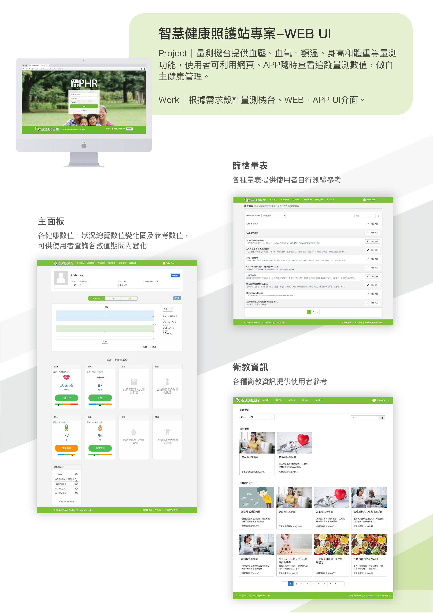
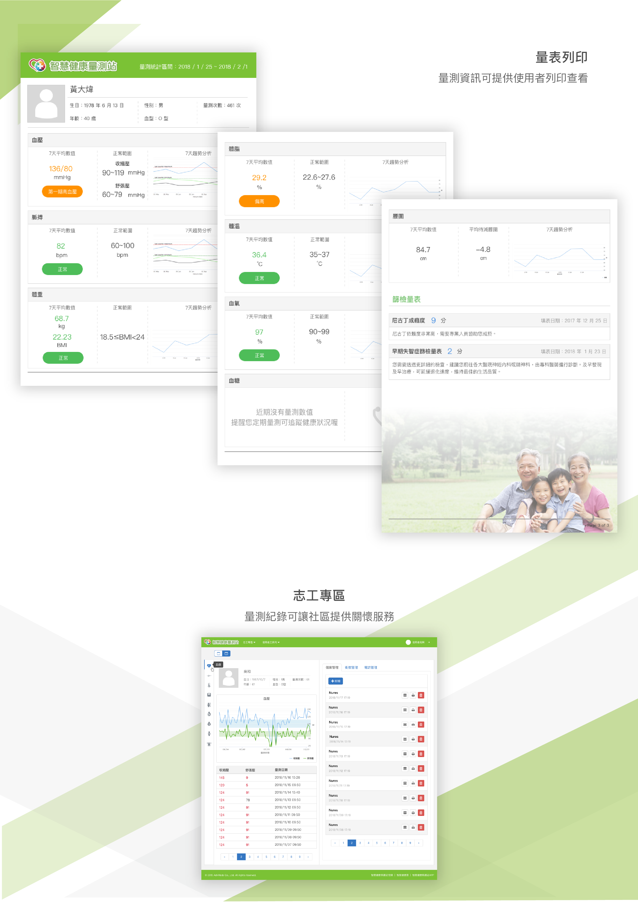
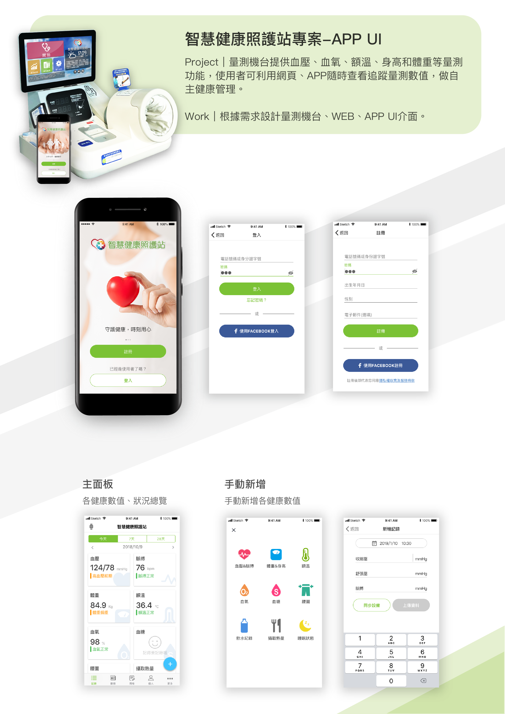
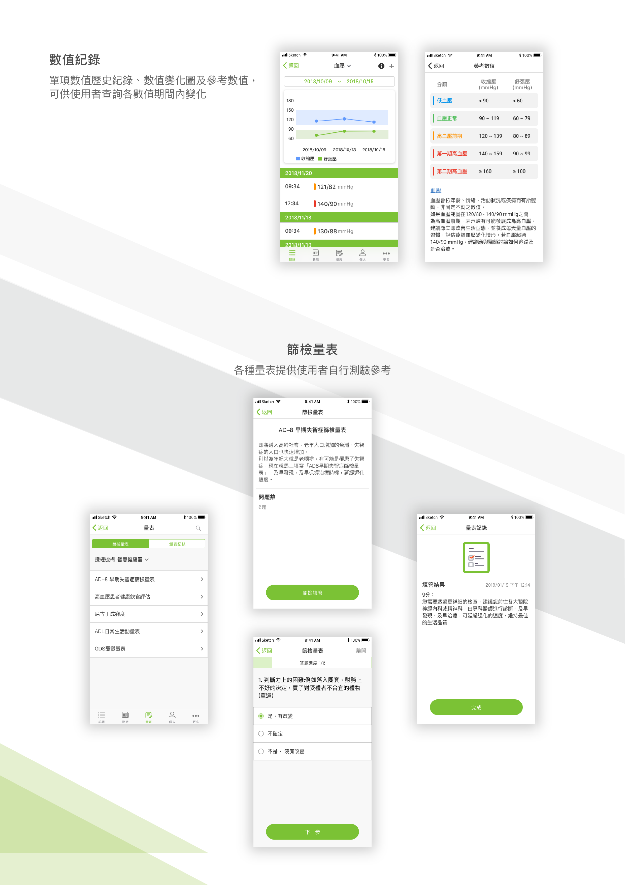
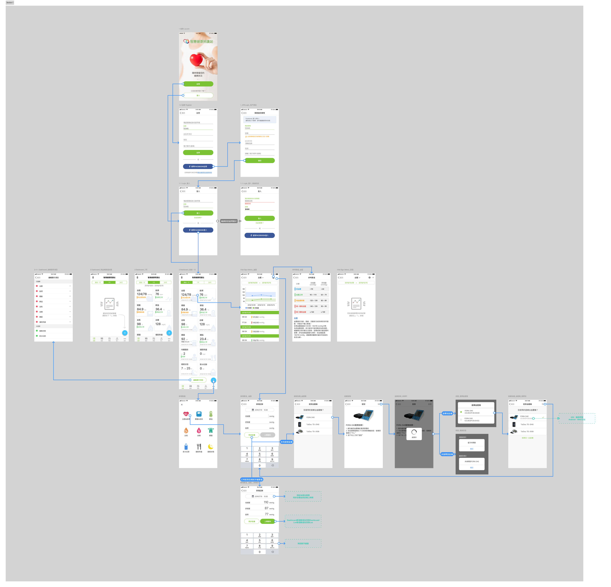

從零打造一套完整的社區健康監測解決方案：整合實體量測機台、跨平台 APP（iOS / Android）與 Web 管理儀表板，建立設計系統確保一致性，以 User Flow 驅動複雜互動邏輯——讓預防醫療真正走入日常生活。
台灣面臨高齡化浪潮加速，慢性病（高血壓、糖尿病）盛行率持續攀升，但傳統「等生病了再看診」的模式讓醫療體系不堪負荷。政府積極推動社區預防保健，衛生所、社區健康中心等機構有強烈的數位化需求，卻缺乏整合硬體與軟體的完整解決方案。
對先進醫資而言，這是典型的 B2G 藍海市場：政府有預算、有政策支持，但市場上的競品多半只提供單一面向（純硬體量測機 or 純 App 紀錄），缺乏串聯整個照護旅程的系統思維。智慧健康照護站定位為「全端照護解決方案」，硬體 + APP + Web + 志工後台一次整合，形成高轉換成本的產品護城河。
政府積極採購社區健康監測設備，預防醫療 IoT 市場在高齡化驅動下快速成長
硬體 + 軟體全端整合，客戶無需對接多家供應商，降低導入門檻同時提高替換成本
設備建置為一次性銷售，軟體訂閱與系統維護形成持續性的 ARR（年度經常性收入）
部署於社區的實體 IoT 設備，測量血壓、血氧、額溫、身高、體重，數據藍牙/Wi-Fi 即時上傳雲端
iOS / Android 雙平台，民眾隨時查看健康數值、手動輸入、完成篩檢量表、連接藍牙量測設備
PC 端儀表板，供民眾深度查看趨勢、志工管理個案、機構人員產出健康報告與政策彙整數據
| 使用者角色 | 主要使用情境 | 核心痛點 | 設計對應 |
|---|---|---|---|
| 一般民眾 中高齡為主 |
量測後查看數值，判斷自己是否健康，追蹤長期趨勢 | 看不懂數字代表什麼意義，不知道「正不正常」 | 顏色狀態色（紅/橙/綠/藍）+ 參考區間 + 趨勢圖，讓數值有情境 |
| 社區志工 受過基礎培訓 |
巡覽社區居民紀錄，找出需要關懷或轉介的高風險個案 | 數據分散、沒有異常警示，難以快速識別需要協助的人 | Web 志工專區提供清單式批量瀏覽，異常數值視覺標示 |
| 醫療照護人員 衛生所/機構 |
需要定期產出社區健康報告交給主管機關，評估計畫成效 | 個別數據難以彙整，製作報告費時費力 | 量表列印功能、Web 後台批量匯出，橋接數位數據與實體報告需求 |


提供帳號密碼、LINE、Facebook 三種登入方式。對中高齡使用者而言，記住密碼是主要阻力；社群帳號登入讓已有 LINE 帳號的台灣用戶能零摩擦進入系統。
PM Insight：LINE 在台灣 40 歲以上族群的滲透率極高，以 LINE 登入等同於降低這個核心族群的使用門檻，同時借助社群平台的通知機制，潛在地提升回訪率。
一頁呈現所有量測指標的最新數值與狀態色，血壓 124/76（正常綠）、血氧 76%（異常紅）、體溫 36.4°C 一眼可辨。底部 Tab Bar 分為紀錄、動態、量表、個人、更多五大功能區。
PM Insight：首屏的設計決策是「讓使用者在 5 秒內判斷今天的健康狀態是否有問題」。這個目標決定了資訊密度的上限——卡片只放最關鍵的數值，趨勢與詳情留給下一層。
除了機台自動上傳，使用者也能手動輸入數值，或透過藍牙連接個人量測設備（血壓計、血糖機）。設備配對流程包含設備掃描、連線確認、量測觸發，整個藍牙 IoT 流程都需要清晰的狀態引導。
PM Insight：「支援個人設備」將產品從「需要去社區站才能量測」進化為「日常家中也能使用」，大幅擴大使用場景，提升數據密度，也讓平台對使用者的黏性從「需要時用」升級為「每天用」。
單一指標頁顯示歷史紀錄清單（每筆附時間戳）與趨勢折線圖，右側同步展示對應的參考區間色階表。使用者能一邊看自己的數值曲線，一邊對照「120-139 是第一期高血壓」的範圍說明。
PM Insight：孤立的數值沒有意義，脈絡才有意義。趨勢 + 參考值的並列設計，讓使用者能自行完成「我的趨勢 × 標準範圍 → 我需要就醫嗎？」的判斷，減少對醫護人員的依賴，也降低不必要的門診量。
篩檢量表是這個產品中含金量最高的差異化功能。除了血壓、體重等生理指標，系統還內建多種標準化篩檢工具，如 AD-8 早期失智症篩查量表（共 8 題的認知功能評估問卷），使用者完成後系統自動計算分數並提供解讀建議，結果可留存為量表紀錄。
PM Insight：這個功能將產品的服務範疇從「生理量測」延伸到「認知健康評估」，在台灣高齡化背景下具有極強的市場需求（失智症早期發現是政府重點施政）。對 B2G 客戶而言，這讓系統更容易對應衛福部的預防保健計畫 KPI，是提高採購意願的關鍵加分項。


跨平台產品（iOS + Android + Web）必須建立統一的設計語言，否則三個平台各自為政，不僅使用者體驗割裂，維護成本也會隨迭代快速累積。
健康數值的四色系統（紅/橙/綠/藍）直接對應「過高/偏高/正常/偏低」，顏色本身即是診斷訊號，使用者不需閱讀文字就能快速辨識。這個設計決策讓色彩在整個產品中具有一致的語義，而非只是美觀元素。
分別定義 iOS（繁方 + SF Pro Text）與 Android（思源黑體 + Roboto）的字型組合，確保在不同作業系統環境下都符合平台原生的閱讀體驗，同時維持視覺風格的一致性。
一份完整的 Style Guide 讓不同設計師協作時有共同依據，也讓工程師能快速實作而不需逐一詢問規格。設計系統是壓縮溝通成本、加速迭代速度的基礎建設。
這個產品的互動複雜度遠超一般 App——多種登入方式、藍牙設備配對、多角色後台、多指標追蹤。User Flow 是在設計開始前釐清所有路徑的關鍵工具，它讓設計師、PM 與工程師在同一張圖上對齊認知，避免後期遺漏邊緣情境。
Flow 圖帶出的設計洞察：藍牙設備配對是整個 App 中狀態最多、最容易失敗的流程（搜尋中 / 找不到設備 / 配對失敗 / 連線斷線），需要為每個異常狀態設計明確的引導文案與重試機制，而不是只設計「成功路徑」。

這個專案讓我第一次完整經歷「從零建立設計系統」的過程——Style Guide 不只是顏色表，更是跨平台設計決策的成文化。一個好的設計系統讓整個團隊能快速決策、降低溝通成本，這是設計師能為產品組織貢獻的長期基礎建設價值。